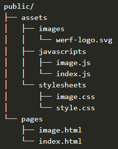

Client-side redirection is achieved using JavaScript, HTML meta tags. When a user requests a page that requires a redirection,
the server sends a response that includes instructions for the client's web browser to navigate to the new URL. This method
is fast, but it can be limited by the user's browser settings.
Server-side redirection is when a user requests a page that requires a redirection, the server sends a response to the
client's browser that includes a new URL. The browser then sends a new request to the server for the new URL.
This method is more reliable and compatible with most browsers, but it can be slower.
Semantic HTML is the practice of using HTML elements that convey meaning and structure to the content of a web page.
Structuring HTML with semantic elements can improve accessibility, search engine optimization, and the overall structure
and organization of the page.
One way to structure HTML with semantic elements is to use the header, main, and footer elements. The header element
is typically used to contain the top part of a web page, which may include a logo, navigation links, or other introductory
content. The main element is used to contain the main content of the page, such as articles, sections, or other content.
Finally, the footer element is used to contain the bottom part of the web page, which may include copyright information,
contact details, or other related content.
Structuring the frontend of a web application involves organizing the code and assets in a way that promotes maintainability, scalability, and reusability.
By structuring the frontend of a web application, we can easily organize our code and assets in a modular and reusable way. Additionally, it makes it easy to add new pages or components to the application without disrupting the existing structure.